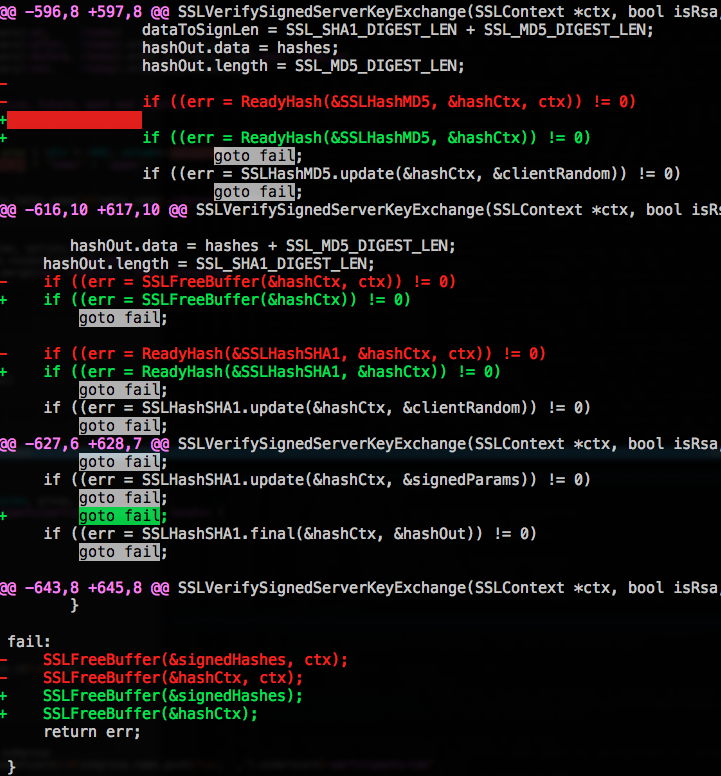
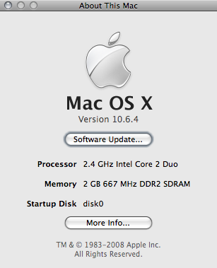
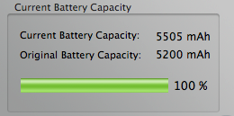

Articles tagged “apple”
goto fail;
In its own words:

Sources: 55179.13.c, 55471.c
Source code differences between two consecutive versions of the Security.framework, a MacOS/iOS component. The seemingly innocuous extra goto fail; is the cause of a severe security flaw in most Apple products.
*BSD onto a MacMini 4,1? No way. :-(
I spent the last two days trying to set up the Aluminium Mac Mini (rev. 4,1) as a home NAS server with encrypted storage, and I wanted a BSD system on it. There’s already an embedded OpenBSD onto the soekris gateway, and another companion would have been nice. :-)
Guess what, there’s no way out:
- FreeBSD 8.1 doesn’t complete the boot process, due to a bug in the SATA chipset, NV MCP89;
- FreeBSD 8.2-RC1 boots but, due to the same bug, doesn’t recognize any SATA drive nor any USB umass device;
- NetBSD 5.1 boots fine, handles SATA disks via the generic pciide driver (no DMA, thus quite slow) but, unluckily, doesn’t handle the BCM57762 ethernet controller. I tried with quick and dirty patches to bring the bge driver up to date with -current, but still no luck: the MII link detection works, the card transmits but doesn’t receive. The sdmmc controller as well works with -current but not with 5.1-RELEASE. ACPI works correctly;
- OpenBSD 4.8 boots, can access the SATA drives without DMA, and recognizes the bge network card, but exposes the very same behaviour as NetBSD 5.1 with the -current driver fitted in;
- DragonFlyBSD 2.8.2 doesn’t even enter kernel mode, I suspect due to ACPI bugs;
- PureDarwin didn’t inspire me too much, due to the many blocking issues.
All of them support encrypted storage, I built up a NetBSD CGD disk flawlessly onto dk wedges; FreeBSD has got the interesting gbde(8) and geli(8) GEOM-based tools that I wasn’t able to test, while OpenBSD supports crypto via a softraid personality. Unluckily, support for the, nowadays, exotic Apple hardware is a no-brainer.
So, with no other way left open, I decided to go the Linux route, using the excellent sysresccd, that I elect today as the successor of the pld-linux rescuecd, companion of endless system recoveries :-). Anyway, you’ll need the 2.6.36 kernel to make it boot onto the MacMini4,1, due to the aforementioned MCP89 bug. Ethernet card and SD card reader work out-of-the-box.
Now, I’m playing with LUKS and, while I’m not that competent in cryptography, looks like it is more evolved than the *BSD counterparts, and anyway it is more versatile tool than the tools in OpenBSD and NetBSD. On the latter, having to set up GPT and DK Wedges to make the CGD and synch MBR and Disklabel to make the boot loader work (yuck!), everything coupled with rEFIt is quite a mess™. There’s a GPT loader for NetBSD but I hadn’t a chance to try it out.
I hope this information is useful to anyone who tries a similar adventure, comments are appreciated :-).
Girl Geek Dinners Workshop @Apple Store, 16 May 2009, Rome
«Women! The knife grinder is here!» – Apart from funny jokes ;) the italian Apple Store together with Girl Geek Dinners Roma organized on May 16, 2009, a workshop about mobile lifestyle (focusing on the iPhone, of course).

Let’s start from the beginning: what are the Girl Geek Dinners? Linda explained to the audience (nearly 20 people) that a geek is a person passionate about technology in a broader sense: the GGD is a group devoted to aggregate women interested about the internet, new medias and technologic lifestyles. Women are often underestimated in geek communities, and this embarassing clichè generated a lot of discussion in the past, and it’s still unsolved (in my opinion).
The GGD italian group was born in 2007 in Milan, and then arrived to Rome in 2008, and is also present in Bologna and in the Marche and Emilia-Romagna states.
So, the GGD group tries to generate a “critical mass” of geek women, to abolish a stereotype that “computer programmers / power users” are only men: in GGD events boys listen and girls talk, [ .. ]
Playing with Audio Units via AU Lab to gain 5.1 surround

The right session shows a document open on an aggregate audio device between soundflower (2ch) and a Creative SBLive with 6 channels: the flower receives sound input from iTunes and routes it to the card channels, using all the 6 speakers.
Making the CCacheServer Kerberos Ticket server actually Work(tm) on OSX
If you’re wondering why the CCacheServer daemon, that caches in memory Kerberos tickets obtained via kinit(1) is NOT starting .. that’s because of a strange bug regarding the LimitLoadToSessionType specified into the agent .plist, located into
/System/Library/LaunchAgents/edu.mit.kerberos.CCacheServer.plist
on OSX 10.5 systems.
You simply have to comment out these two lines:
I've already got Mac OS Snow Leopard 10.6
And this is the proof:

( Of course, if you know about SystemVersion.plist, skip this entry ;) )
10.5.2 Odissey: a small journey in Mac OS X services and components
Well, I’m really happy with OSX 10.5.2. Even I’m not the one that blamed Apple for the translucent menu bar that everyone dislikes.. well, I like it. I don’t care about the TM menu bar tool, because I haven’t bought (yet) the nifty Time Capsule, I like the spinner in the Airport menu and, most of all, I really like the updates to the BluetoothSCOAudioDriver.kext that drives my bluetooth headset.
Spotlight also feels faster and faster on every upgrade, and I’m a heavy spotlight user, so this makes me really happy. Thanks Apple engineers!
Back to the topic: why odissey? Because as per my battery hints, I managed to make my MacBook2,1 SHUT DOWN while at 74% of the “Writing files” phase of the combo update… resulting in a completely broken system, as every geek could imagine :). Apple updated some libraries, and upon reboot simply nothing worked, and the darwin console was filled with lots of error messages.
how to keep your apple notebook battery healthy
3 simple rules:
- DO NOT leave your charger connected when the battery is charged, even when you go to sleep.
- DO let it discharge completely, when using it wait till it reaches 0%, when sleeping it leave it alone, when you’ll wake up and you’ll open it, a resume from suspend to disk will greet you. OSX FTW.
- Monitor it and show off OSX performance counters to your friends (images courtesy of CoconutBattery.app and System Profiler.app)
